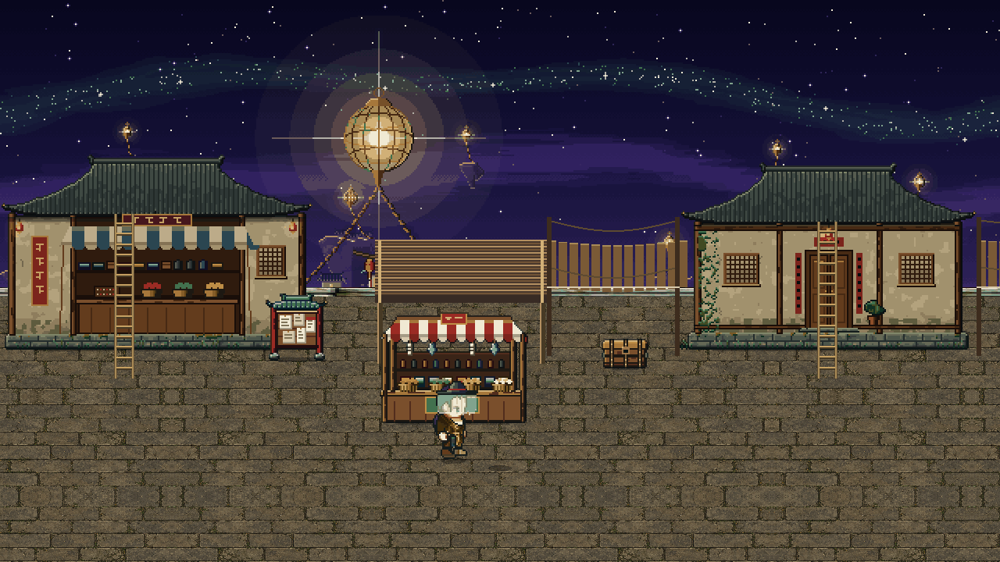
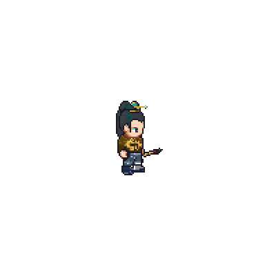

Peddler Ning
Harbour peddler
…
Tester
Sphere Lord 1 · Lv 93
HP
QI
SL
Otter
Tie Niu
Lan Yue
Burden 50
34▼lanterns
◆ The Citadel
➤ Citadel Gate · Star Warden Citadel
· Take the Wardens' skiff to the Citadel
➤
Harbor Market
✓
1
Cultivate
Presence
Sphere
Sense
Pet
Talk · Peddler Ning
Stored Qi 5,633
◆ Bottleneck reached · breakthrough ready · hold Cultivate